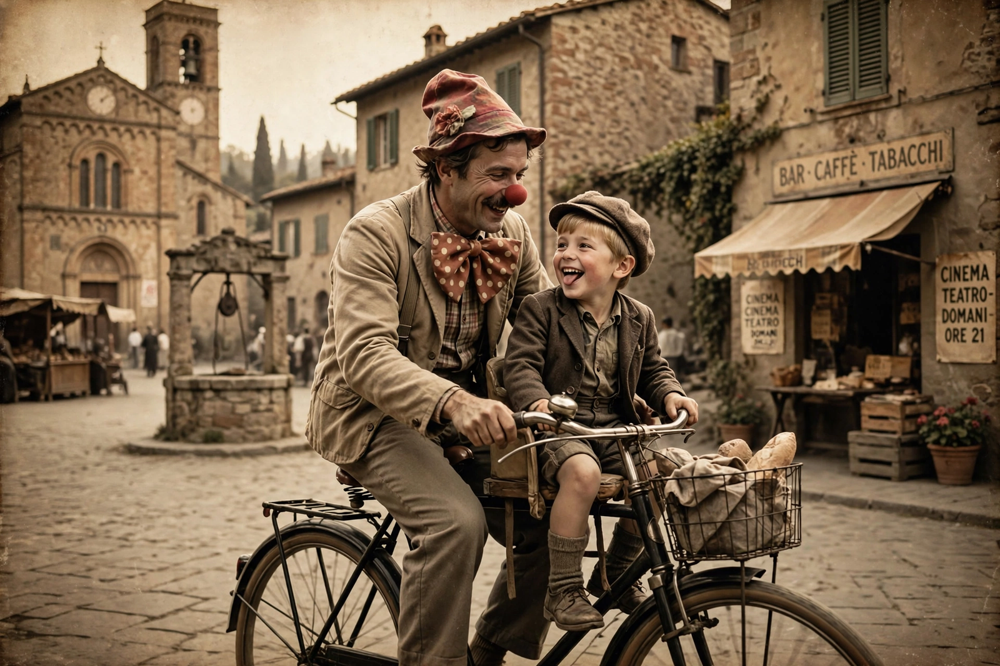

| Life Is Beautiful | |
|---|---|
 Guido and Giosuè | |
| Directed by | Roberto Benigni |
| Written by | Roberto Benigni, Vincenzo Cerami |
| Starring | Roberto Benigni, Nicoletta Braschi, Giorgio Cantarini |
| Music by | Nicola Piovani |
| Release date | 1997 |
| Country | Italy |
| Language | Italian |
Life Is Beautiful (Italian: La vita è bella) is a 1997 Italian comedy-drama film directed by and starring Roberto Benigni, who co-wrote the screenplay with Vincenzo Cerami. Benigni plays Guido Orefice, an Italian Jewish bookshop owner who uses his imagination to shield his son from the horrors of a Nazi concentration camp. The film won the Grand Prix at the 1998 Cannes Film Festival and three Academy Awards, including Best Actor for Benigni and Best Foreign Language Film.
In 1939 Arezzo, the cheerful Guido courts schoolteacher Dora with a series of comic "coincidences" and wins her away from her fascist fiancé. They marry and have a son, Giosuè. In 1944, under the German occupation, Guido and Giosuè are deported to a concentration camp; Dora insists on boarding the train too. Guido convinces Giosuè that the camp is an elaborate game in which the first to score 1,000 points wins a real tank, hiding the boy from the guards and "translating" their orders into rules of the game. On the night of liberation Guido hides Giosuè in a box and is shot while searching for Dora; in the morning an American tank rolls in, and Giosuè — believing he has won — rides out to be reunited with his mother.
The story was partly inspired by Benigni's father, who spent time in a German labour camp, and by Rubino Romeo Salmonì's memoir of surviving Auschwitz. Some critics questioned the use of comedy for the Holocaust, but the film was a worldwide success, grossing over $230 million and becoming one of the highest-grossing non-English-language films ever.